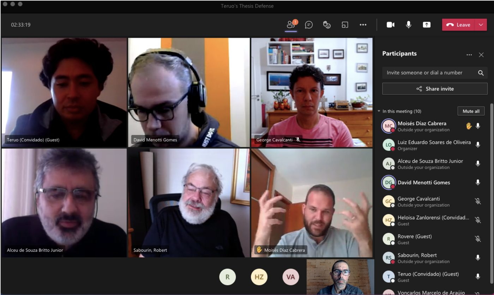

Dr. Teruo
Thesis defense: Teruo Maruyama
Yesterday, on July 19th, 2021, the doctoral defense of student Teruo Maruyama took place. In his thesis, Teruo investigated how to synthetically generate handwritten signatures to train robust machine learning models. The thesis titled “Automatic Intrapersonal Variability Modeling for Offline Signature Verification” will be available soon. A summary of the thesis can be found here. The examining committee was composed of the following professors:
Moises Dias (University of Las Palmas de Gran Canaria - Spain)
Prof. George Cavalcanti (UFPE)
Prof. David Menotti (UFPR)
Prof. Alceu Britto Jr (PUCPR)
Prof. Robert Sabourin (ETS - Canada)
And like everything we have been doing at the university since March 2020, this defense took place remotely.
